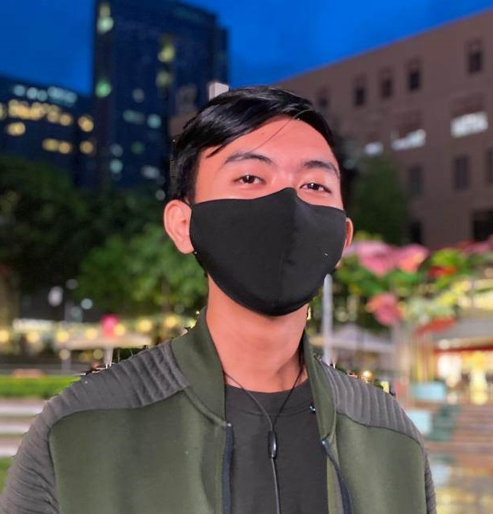

Jonas Eguiron

Summary
Hi! I am Jonas Eguiron, an aspiring full time IT Professional. I am currently in my second year of college and I have already created multiple projects that involves object oriented projects, e-Commerce website, and many more!
Education
As of today, May 05 2023, I am currently a second year college in Technological University of the Philippines. Below is the full list of my educational background:
- College
- School: Technological University of the Philippines
- Degree: Bachelor of Science in Information and Technology
- Year: 2021 - 2025
- K-12
- School: Moreh Academy Taguig
- Degree: Senior High School Diploma
- Year: 2020 - 2021
Work Experience
- Customer Service Representative
- Company: iQor
- Department: Retail Account
- Date: 09/2021 - 11/2021
- Company: FIS
- Department: Debit
- Date: 11/2021 - 01/2022
- Recuitment Admin Coordinator
- Company: PSG Global Solutions
- Department: Recruitment Admin I
- Date: 02/2022 - 04/2023
Skills
If I were to say, my skills are 75% acquired and 25% inherent. This is just how I like to view my skills so that I would know which area I must train, with that being said here are some of my skillset that are acquired and inherent:
- Inherent:
- Pattern recognition
- Accurate decision making
- Acquired:
- Speed typing
- Program Documentation
- Making Publication Materials
- Using C# for game development
- Using Laravel framework for web development
- Operating Systems using virtual machines
Achievements/ Awards
- Year: 2021
- SSC President
- Donation Drive Volunteer
- Outstanding Leadership
- Year: 2022
- Pasig, Octoberan's Champion (Badminton)
- JBTC Runner up (Badminton)
- DevCon Campus Participant: AI discussion
- DevCon Campus Participant: Laravel Framework discussion
- DevCon Campus Participant: Arduino UNO discussion
- DevCon Campus Participant: UI/UX discussion
My Hobbies
Contact Me